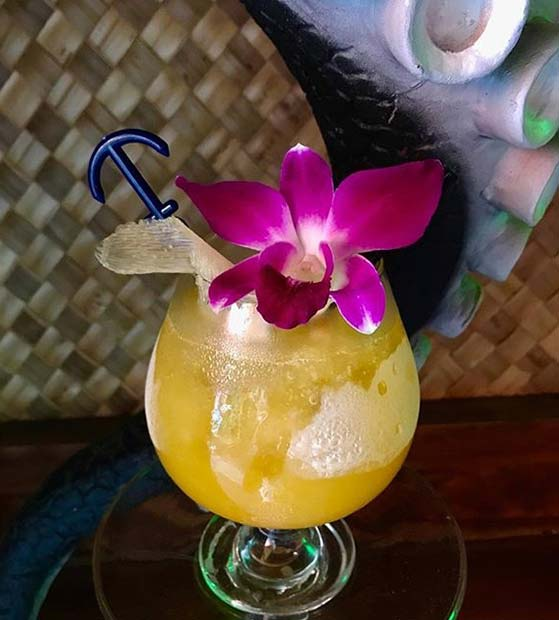

Octopus

The perfect drink to take you to paradise!
This recipe comes from Beachbum Berry Remixed and was created by Al Hong of the Waikiki Trader Vic's in the 1940s. It's a sweet and tart drink that makes you feel like you're on a tropical island vacation.
Ingredients
- 1.5oz Orange Juice
- 1.5oz Passion fruit juice or puree
- 1.5oz Light Overproof Rum
- 1.5oz Club Soda
- Dash Angostura Bitters
Steps
- Grab Octopus mug or large snifter
- Fill with crushed Ice
- Add OJ, Passion fruit juice, rum, soda, and bitters
- Mix
- Garnish with Orchid